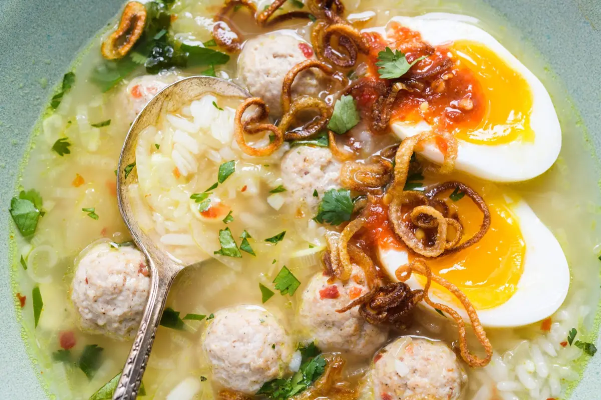

Thai Rice Soup
- Total time35 mins
- Serves4
- Ingredients12
- Steps3

Ingredients
- 8 ounces ground pork
- 3 tablespoons fish sauce, divided, plus more to serve
- 2 tablespoons chili-garlic sauce, divided, plus more to serve
- Kosher salt and ground black pepper
- 3 tablespoons lard or refined coconut oil
- 5 large shallots, halved lengthwise and thinly sliced
- 8 medium garlice cloves, thinly sliced
- 3 lemon grass stalks, trimmed to bottom 6 inches, dry outer leaves, smashed
- 2 tablespoons finely grated fresh ginger
- 2 1/2 quarts low-sodium chicken broth
- 1 cup chopped cilantro
- 3 tablespoons lime juice, plus lime wedges, to serve
Directions
- In a medium bowl, mix the pork, 1 tablespoon of the fish sauce, 1 tablespoon of the chili-garlic sauce, and 3/4 teaspoon white pepper. Form into 20 meatballs (about 2 tablespoons each). Place on a lrage plate and refrigerate for 10 minutes.
- In a large Dutch oven over medium-high, heat the lard until shimmering. Add the shallots and 1/2 teaspoon salt, then cook, stirring, until browned, about 5 minutes. Stir in the garlic and cook until fragrant, about 30 seconds. Stir in the lemon grass and ginger and cook until fragrant, about 30 seconds. Add the broth and bring to a boil, scraping up any browned bits, then reduce to medium and simmer, uncovered, until the flavors blend, about 15 minutes.
- Remove and discard the lemon grass. Add the meatballs, stri gently and simmer over medium until just cooked through, 3 to 4 minutes. Stir in the rice and cook until heated through, about 1 minute. Off heat, stir in the remaining 2 tablespoons fish sauce, the remaining 1 tablespoon chili-garlic sauce, the remaining 1 teaspoon white pepper, the cilantro and lime juice. Ladle into bowls and serve with chili-garic sauce and lime wedges.
Recipe credit: Milk Street Tuesday Nights by Christopher Kimball